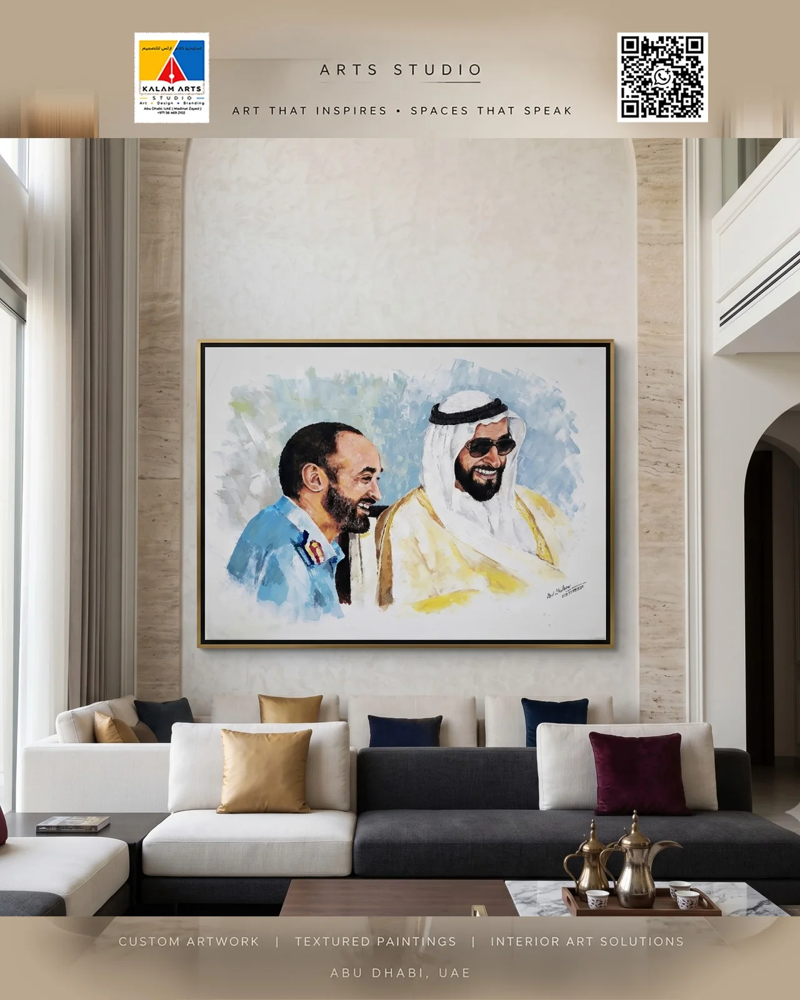
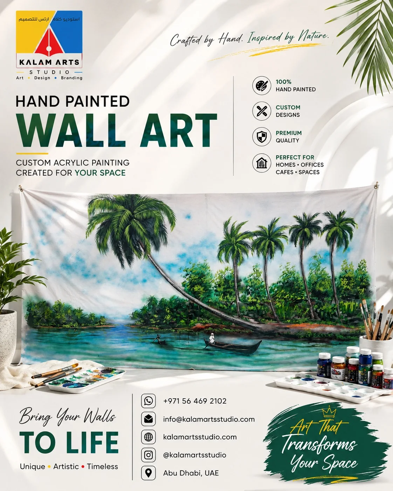

Families, parents & students
School and university project models, science displays, creative keepsakes and custom artwork.
KALAM ARTS STUDIO is an Abu Dhabi creative studio for custom canvas paintings, pencil portraits, 3D models, dioramas, school project displays, murals and calligraphy. Explore real project photographs, then share your brief for a custom quote.
 A studio built around detail
A studio built around detailAbu Dhabi base · UAE enquiries welcome · Custom-made work
Choose a service or bring us an idea that doesn’t fit into a category. We’ll help define the right creative direction.

Scale models, dioramas, resin, foam and PVC structures, and detailed custom builds.

Original hand-painted canvases, textured art, calligraphy and custom compositions.

Pencil sketches and custom portraits created from your chosen reference photographs.

Student exhibition models, science and architectural craft projects, and National Day displays.

Wall art, murals, creative brand applications and visual details for spaces and events.

Creative workshops, exhibition stalls and event-focused art and craft experiences.
From personal commissions to presentation projects, the best starting point is a clear purpose and a useful brief.
School and university project models, science displays, creative keepsakes and custom artwork.
Personal pencil portraits and artwork planned around a meaningful subject or occasion.
Canvas paintings, textured art, calligraphy and wall artwork for considered spaces.
Murals, cultural displays, exhibition craft and creative visual elements for events or venues.
Based in Abu Dhabi, United Arab Emirates. Enquiries from Dubai and other UAE locations are welcome; feasibility, timing and handover arrangements are confirmed for each project.
Browse the main studio categories, see how projects take shape and find the right route to enquire.
Scale models, dioramas, resin, foam and detailed builds.
Explore 3D work ↗Original canvas paintings, textured artwork and calligraphy.
Explore canvas art ↗Pencil and painted portraits developed from reference photos.
Explore portraits ↗Science models, cultural displays and exhibition projects.
Explore student work ↗See the work move from concept and planning to making and finish.
Inside the studio ↗
Visit the studio profile for customer feedback and delivery updates.
View Instagram ↗
A strong result starts with understanding the brief. We bring the idea into focus, plan the making process and pay attention to the finishing touches.


Each project is different. The process is adapted to its scale, materials, purpose and deadline.
Share your idea, reference images, dimensions and deadline.
We discuss the approach, materials, scope and estimate.
The artwork or model is developed with attention to detail.
Review the finished work and coordinate collection or delivery.
Helpful notes for choosing a service, planning a project and understanding the making process.

A practical guide to references, dimensions, purpose, material and display requirements.
Read article →
Think through wall size, colour, mood and composition before choosing a custom artwork.
Read article →
Simple reference-photo tips that help a portrait artist capture the details that matter.
Read article →The studio works across custom canvas art, calligraphy, pencil portraits, 3D models and dioramas, school and university project displays, murals, interior artwork and event or exhibition design.
KALAM ARTS STUDIO is based in Abu Dhabi, United Arab Emirates. Enquiries from Dubai and other UAE locations are welcome; project logistics are confirmed individually.
Send a reference image or sketch, the intended purpose, approximate dimensions, quantity, location and target date through WhatsApp or the contact page. The studio can review the scope and discuss the next step.
Yes. A rough sketch, photograph, reference link or technical drawing is a useful starting point. Mark the details that must be accurate and mention anything that can be adapted.
The quotation depends on the project type, size, complexity, materials, detail, quantity, finishing requirements and deadline. A project-specific quote is prepared after the brief is reviewed.
Send the brief, a reference picture or even a rough sketch. We’ll discuss what can be created and the next practical steps.